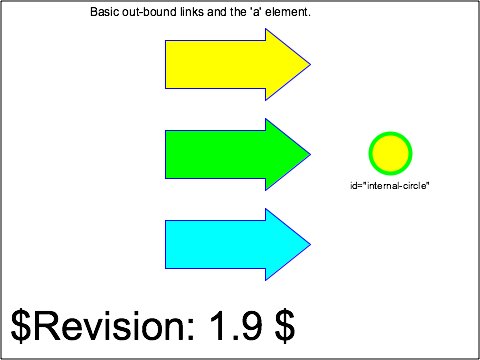

linking-a-04-t |
||
| SVG Image | INKSCAPE Image | PNG Image |

|
 | |
|
||||||||||||
Verify the capability to handle basic links out of SVG content using the 'a' element, with the xlink:href attributes. There are three subtests, in each of which one of three colored arrows comprise the content of an 'a' element. The link destination is expressed by "xlink:href=". The initial view of this test contains the three arrows, a colored circle, labelling text, and the usual template legend and frame.
The top-most (yellow) arrow links to an external SVG file, which is local (in the same directory). The target file contains SVG 'text' elements which comprise a TOC and brief description of all of the test files for Linking. Upon clicking the first arrow, the image of the linkingToc-t.svg file should replace the initial view of this test case in the viewer frame.
The middle (green) arrow links to an object in this SVG test file, the yellow circle (id="internal-circle") immediately to its right, using "#circle-object" as the value of of the xlink:href attribute. There should be no change to the viewer frame upon clicking this arrow.
The bottom-most (blue) arrow links to remote non-SVG content, the W3C home page using xlink:href attribute value "http://www.w3.org". For viewers in a Web browser environment, the W3C home page should replace the initial view of this test case in the browser/viewer frame. For other viewers (e.g., interactive but SVG-only standalone viewers), the result is undefined, but could include such actions as a diagnostic "Error parsing..." message.
There are several reference images associated with this test case. The first illustrates the correct "start" or initial state of the rendered SVG file. The second illustrates the correct image after the first link is activated (to the linkingToc.svg file). The third (for browser-environment viewers) should match the current image of the W3C home page, as viewed with a conventional browser. (Note. This harness does not yet provide access to multiple PNGs; the first, initial-state PNG is shown.)
The test uses the 'rect' and 'polygon' elements, as well as basic fill (solid simple colors), stroke (black and colored wide and 1-pixel lines), font-family (Arial) and font-size properties.